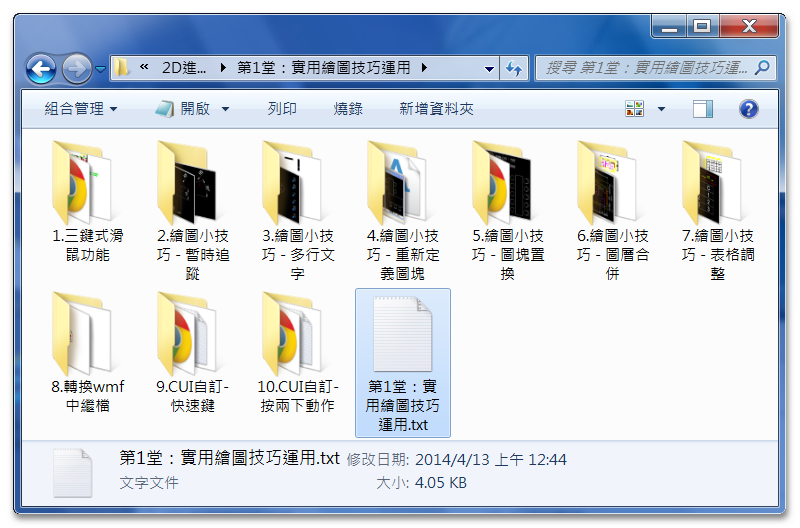
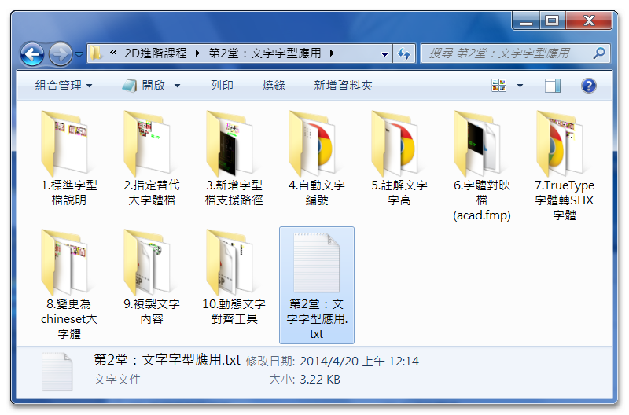
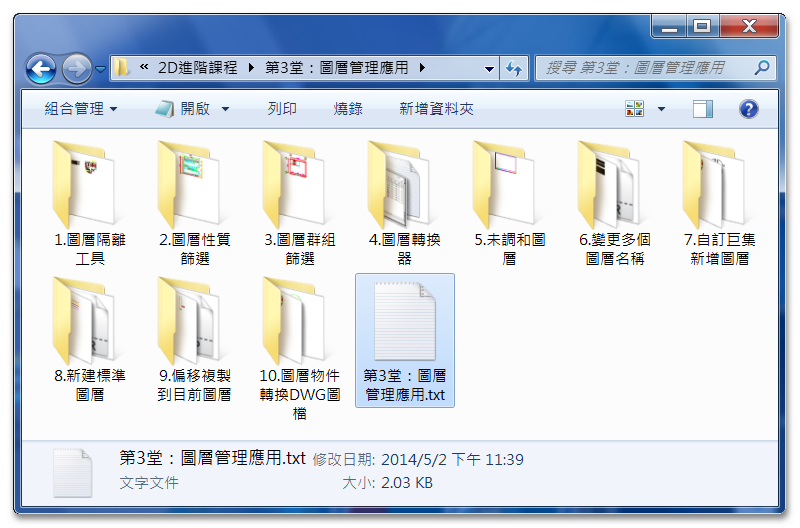
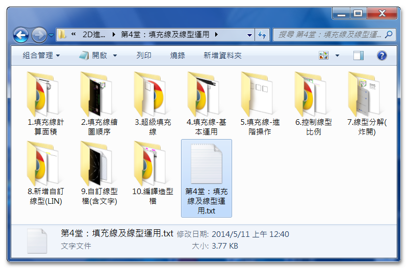
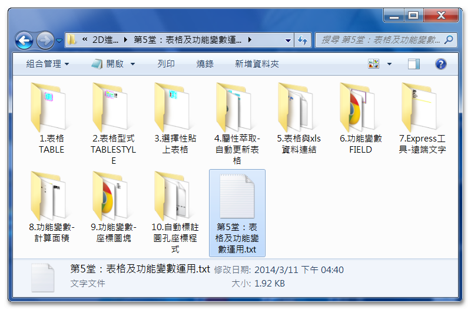
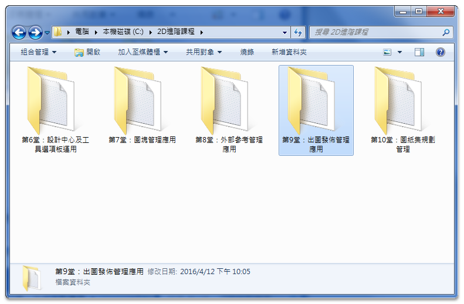

★注意：線上課程影片頻道綁定「GMAIL信箱」，透過電腦線上觀看影片時，必需要「登入GOOGLE帳戶」！
★加入線上課程 👉 https://autocad-tw.1shop.tw/fwmimx 👈
版本：AutoCAD 2010
影片：中文影音教學
規格：共計10堂課（課程900分鐘）
註：附有DWG範例供操作練習，還有相關教學文件筆記。
https://drive.google.com/file/d/15e1n7P6A0sVl7JJ_EkKDsDXyq-63eojF/view?usp=sharing
☆教授軟體為AutoCAD 2010版本，使用2009至2023版本也可以（介面一樣），因為基礎指令及設置都是通用的，所以學習上不會有問題，這點請大家放心，參與練習過程中有任何疑慮，請回論壇主題中發表文章討論，讓你學習無後顧之憂！
只要您有使用過AutoCAD 2D的相關經驗，就可以透過教學快速提升職場上工作效率。而且不管您的身份是「學生」，還是已經進入職場的「社會人士」都適合喔！
註1：附有DWG範例供操作練習，還有相關教學文件筆記。
註2：如遇播放問題，可改用「彈出式視窗」全螢幕觀看影片。

■AutoCAD 2D進階 第5堂：表格及功能變數運用
■AutoCAD 2D進階 第6堂：設計中心及工具選項板運用
第1堂：實用繪圖技巧運用

第2堂：文字字型應用

第3堂：圖層管理應用

第4堂：填充線及線型運用

第5堂：表格及功能變數運用

第6堂：設計中心及工具選項板運用

第7堂：圖塊管理應用
第8堂：外部參考管理應用

第9堂：出圖發佈管理應用


第10堂：圖紙集規劃管理


https://www.autocad-tw.com/f72-forum
https://www.autocad-tw.com/t23024-topic
https://www.autocad-tw.com/t22774-topic